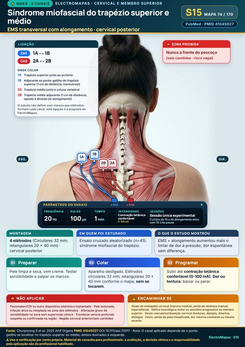
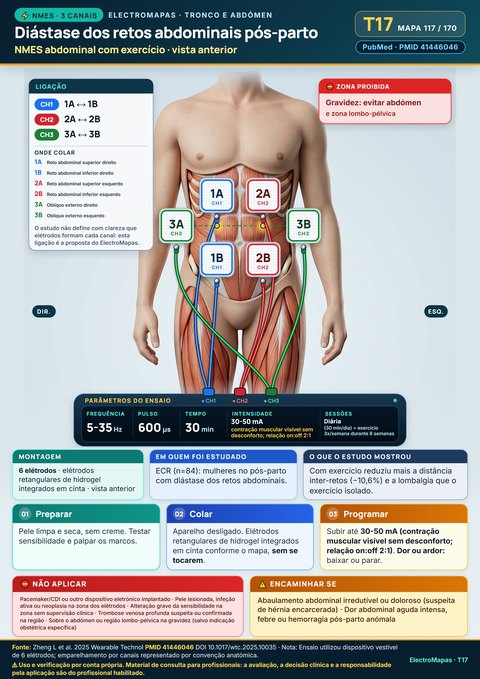
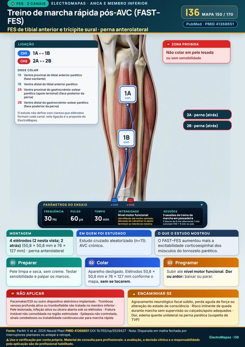

Ganhaste 20 mapas extra
Obrigado pela tua compra. Estes 20 mapas são um presente e juntam-se ao teu Atlas. Vê-os abaixo; no fim da página confirmas como os recebes.
Os teus 20 mapas de presente
Miniaturas reais. Ficam no módulo «Presente» do Clube FisioVanta.


Ver a lista dos 20 mapas
- I22 SDRC do joelho pós-artroscopia
- I29 Artroplastia do joelho (<72 h)
- I30 Gonartrose feminina
- T05 Lombalgia crónica inespecífica
- T08 Lombalgia recorrente
- T09 Lombalgia crónica
- S13 Cervicalgia mecânica subaguda e crónica
- I21 Dor femoropatelar
- I23 Gonartrose medial (grau II)
- I42 Pé pendente na esclerose múltipla
- I45 Instabilidade pós-entorse do tornozelo
- I48 Neuropatia periférica diabética
- I54 Quedas e arco plantar no idoso
- S17 Ombro: protocolo da capsulite adesiva
- S18 Tendinopatia do supraespinhoso
- T01 Dismenorreia primária
- T02 Estimulação funcional escapular
- T03 Discinesia escapular
- T24 Pós-operatório de hérnia inguinal
- I12 Pós-artroplastia da anca (sono)
Antes de confirmares: completa a coleção
Só nesta página, por ser cliente: mais 70 mapas e o Atlas completo por 19,90 €.
70 mapas novos, por área clínica
Áreas que o teu Atlas não cobre: reabilitação neurológica, UCI, pós-operatório e mais.
Alguns dos 70 mapas novos






Coleção Completa ElectroMapas
Os 70 mapas novos + o Atlas completo num só volume.
- 70 mapas novos, cada um com a sua ficha prática
- Atlas completo de 601 páginas: 170 mapas + 170 fichas
- Estudo publicado (PMID/DOI) no rodapé de cada mapa
- Mapas imprimíveis para o gabinete ou o domicílio
- Os teus 20 mapas de presente continuam teus
Menos de 0,30 € por cada mapa novo.
Sim, quero a Coleção Completa · 19,90 €Pagamento seguro na Hotmart · acesso imediato no Clube FisioVanta
Garantia de 15 dias. Se não servir para a tua prática, pedes o reembolso na Hotmart nos primeiros 15 dias, sem perguntas.
Para quem é
É para ti se…
- Trabalhas em neuro, internamento, UCI ou pós-operatório
- Queres o estudo certo à mão para cada caso
- Preferes ter tudo num só volume para imprimir
Não é para ti se…
- Só tratas dor musculoesquelética simples
- Já tens um protocolo próprio para cada uma destas condições
Perguntas rápidas
Se disser que não, perco os 20 mapas de presente?
Não. Os 20 mapas são teus em qualquer caso e ficam no módulo «Presente» do Clube FisioVanta.
Os 70 mapas repetem os que já tenho?
Não. São 70 mapas diferentes dos que compraste. O Atlas de 601 páginas junta tudo num só volume: os mapas que já tens, os 20 de presente e os 70 novos.
Como recebo?
Logo a seguir ao pagamento, no Clube FisioVanta (área de membros da Hotmart), com o mesmo e-mail da compra.
Posso pagar com MB WAY?
Sim. Também podes pagar com Multibanco, cartão, Apple Pay ou Google Pay.